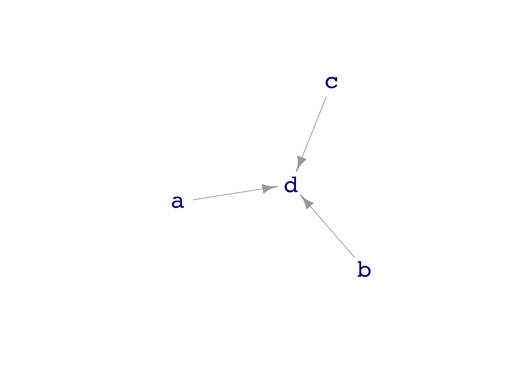
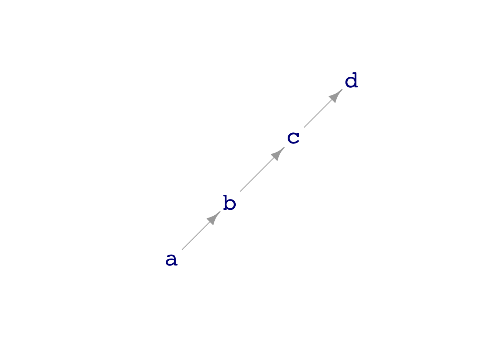
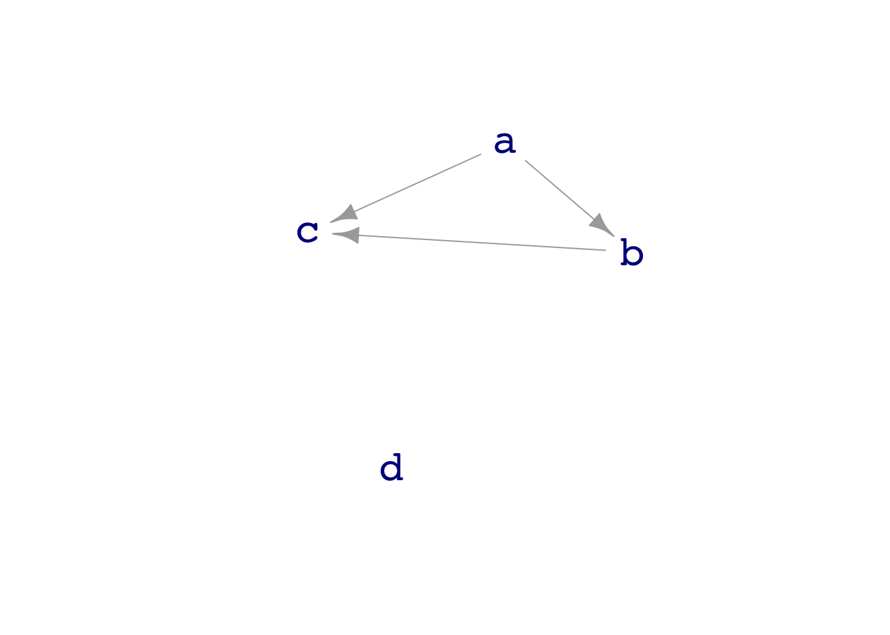

dag_draw(dag04)
dag_draw(dag05)
dag_draw(dag07)
Covariates eat variance
Prof. Danny Kaplan
October 14, 2022
Correctly define “covariate”.
Understand why including covariates—even spurious ones—always improves the appearance of model performance in in-sample testing.
Read a DAG to anticipate when using spurious covariates will improve or will worsen model performance on out-of-sample prediction.
TBD
Including covariates in a model can help, or can hurt. These are the conclusions we’re working toward:
In-sample, including covariates in a model always reduces the (in-sample) prediction error. The pattern is stronger the smaller the training data set.
Out-of-sample, including covariates may or may not reduce prediction error. It depends on whether the covariates are genuinely connected to the response variable.
Irrelevant covariates make (out-of-sample) prediction worse. This effect is strongest for small training data sets.
Remember, since some of the conclusions depend on what variables are connected to what, we need to demonstrate the phenomena using a system where we know the structure.
We’ll come back to this topic, as a basis for ANOVA, when we do hypothesis testing. There we’ll look at the sum of squares, mean square, F and such.
Today, we’ll work mostly with in-sample modeling. This reflects the case in the real world, where you have a data set but not usually an easy way to collect more data for testing.1
Let’s work with dag04,dag05, and dag07 to illustrate some points about covariates.
Start with dag04, where variables a, b, and c all contribute to the formation of d.
[1] 1.6078678 1.1820169 0.8172672Prediction error gets smaller, the more covariates are included.
The situation can be different. In dag05, a, b, and c all contribute to d, but not separately. a and b communicate with d only via c. If c is in the model, a and b contribute nothing to reducing prediction error.
[1] 0.9343436 0.9343405 0.9334211dag07 is a case where we have covariates, but they aren’t actually connected to d. Will they reduce prediction error? We’ll use a very small sample size, \(n=4\), to make the situation obvious.
[1] 8.818567e-01 4.671809e-01 2.674724e-01 1.816029e-15dag07 model
Confirm these by running many simulations.
1!) is zero. A perfect model?We’ve been using RMS prediction error to quantify how well the response variable has een
In dag04, build models to predict c from the other variables. Does one of those variables “block” the others?
SOLUTION:
[1] 1.0585398 0.9351161 0.9138859 0.8254094d seems to block effect of a and b on c.
We are using in-sample testing because that is often the case in the model-building stage. However, in the model-using stage, things are different. You will be making predictions of new cases, that is, out-of-sample.
For out-of-sample, when working with new data, it’s not just a matter of being tricked into thinking covariates are useful when they’re not. Using irrelevant covariates can be genuinely harmful to the predictions.
Compare these in-sample and out-of-sample results.
set.seed(101)
compare_rms_error(dag07, d ~ 1, d ~ c, d~ b + c, d ~ a + b + c, n=4, in_sample = TRUE)[1] 4.689275e-01 4.188891e-01 3.603896e-01 1.416962e-16set.seed(101)
compare_rms_error(dag07, d ~ 1, d ~ c, d~ b + c, d ~ a + b + c, n=4, in_sample = FALSE)[1] 0.965495 1.434434 1.641881 1.591050What do you see in the results that tells you that incorporating irrelevant covariates hurts the out-of-sample predictions?
There is a technique that let’s you get many of the benefits of out-of-sample testing with only one dataset. It’s called cross-validation. Perhaps later in the course, but we have bigger fish to fry right now.↩︎